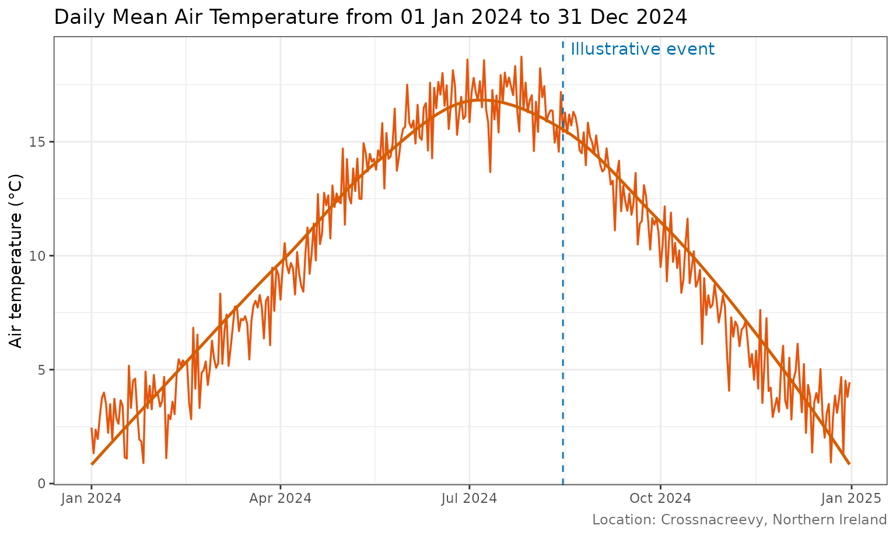

Customising crossmet plots with ggplot2
Source:vignettes/ggplot-customisation.Rmd
ggplot-customisation.RmdPlotting functions return ggplot objects
The plotting functions in crossmet return ordinary
ggplot2::ggplot() objects. This means you can save them in
variables, inspect them, and extend them with the same layers and scales
you use in any other ggplot2 workflow.
For example, create a mean air temperature plot and check its class:
temperature_plot <- MeanAirTempPlot(sample_weather)
inherits(temperature_plot, "ggplot")
#> [1] TRUEThe result is TRUE: the returned object is a ggplot
object, not a static image. You can therefore add layers with the
+ operator.
Add a geom and annotate an event
The following example adds a smoothed trend line to the daily observations. It then marks an illustrative event date with a vertical line and a text annotation. Replace the example date and label with an event relevant to your own analysis (for example, a storm, frost, equipment change or management intervention).
event_date <- as.Date("2024-08-15")
temperature_plot +
geom_smooth(
method = "loess",
formula = y ~ x,
se = FALSE,
colour = "#D55E00",
linewidth = 0.9
) +
geom_vline(
xintercept = as.numeric(event_date),
linetype = "dashed",
colour = "#0072B2"
) +
annotate(
"text",
x = event_date,
y = Inf,
label = "Illustrative event",
vjust = 1.5,
hjust = -0.05,
colour = "#0072B2"
)
#> Warning in scale_x_date(date_labels = "%b %Y"): A <numeric> value was passed to a Date scale.
#> ℹ The value was converted to a <Date> object.
Here, geom_smooth() inherits the data and aesthetic
mappings from the original crossmet plot. The event marker is added as
another ggplot2 layer; annotate() places a label at the
same date. No changes to the package plotting function are needed.
Extend other crossmet plots
The same approach works with the other plotting functions. For example, add a point layer to a rainfall plot, or change its labels and theme:
rainfall_plot <- RainfallPlot(sample_weather)
rainfall_plot +
labs(
title = "Daily rainfall at Crossnacreevy",
subtitle = "Add your own explanatory subtitle",
caption = "Source: Crossnacreevy weather observations"
) +
theme_minimal()You can use any compatible ggplot2 layer, scale, coordinate system or theme. For details, see the ggplot2 documentation. The examples in this vignette use synthetic data only and do not represent actual station measurements.